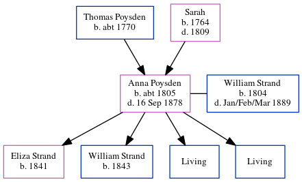

Anna Maria Strand (née Poysden) c1805 - 1878
[ Home ] | [ Calendar ] | [ Surnames Index ] | [ Errors ] | [ Family History ]The child of Thomas Poysden and Sarah, Anna Poysden, the four times great-aunt of Nigel Horne, was born in St Lawrence, Thanet, Kent, England c. 18051,2, was baptised in Canterbury, Kent, England on 1 May 1808 and married William Strand (an agricultural labourer with whom she had 4 children: Eliza, William, Joseph Thomas and Edwin, along with 2 surviving children) in Sturry, Kent, England on 1 Jun 18337.
During her life, she was living in Chislet, Kent, England in 18411; and in Upstreet, Kent, England on 30 Mar 18519.
She died on 16 Sept 1878 in Chislet3,4,5,6 and was buried there at St Mary The Virgin on 22 Sept 18786,8.
Parents
- Thomas was born c. 1770
- Sarah was born in 1764
Children
- Eliza was born in 1841
- William was born in 1843
Citations
- 1841 England Census Online publication - Provo, UT, USA: The Generations Network, Inc., 2006.Original data - Census Returns of England and Wales, 1841. Kew, Surrey, England: The National Archives of the UK (TNA): Public Record Office (PRO), 1841. Data imaged from the National
- 1851 England Census Online publication - Provo, UT, USA: The Generations Network, Inc., 2005.Original data - Census Returns of England and Wales, 1851. Kew, Surrey, England: The National Archives of the UK (TNA): Public Record Office (PRO), 1851. Data imaged from the National
- England & Wales deaths 1837-2007 - Findmypast
- England & Wales, FreeBMD Death Index: 1837-1915 Online publication - Provo, UT, USA: The Generations Network, Inc., 2006.Original data - General Register Office. England and Wales Civil Registration Indexes. London, England: General Register Office. © Crown copyright. Published by permission of the Cont
- England Deaths & Burials 1538-1991 - Findmypast
- England, Select Deaths and Burials, 1538-1991 Ancestry.com Operations, Inc.
- England Marriages 1538-1973 - Findmypast
- Kent, Canterbury Archdeaconry burials 1538-1988 - Findmypast
- 1851 England, Wales & Scotland Census - Findmypast (was age 43 and the wife of the head of the household)
Media
Canterbury Baptisms Transcription - GBPRS-CANT-B-96184777
England Marriages 1538-1973 - R_848270042/2
Kent, Canterbury Archdeaconry burials 1538-1988 - GBPRS/CANT/D/95075652
England Deaths & Burials 1538-1991 - R_276280550
England & Wales deaths 1837-2007 - BMD/D/1878/3/AZ/000332/349
England Marriages 1538-1973 - R_848222728/2
1851 England, Wales & Scotland Census - GBC/1851/0005818731
Kent Baptisms - GBPRS/CANT/B/96187080
England Births & Baptisms 1538-1975 - R_882806124
England Births & Baptisms 1538-1975 - R_885424434
England Births & Baptisms 1538-1975 - R_885404550
Family Tree
Map
Generated by ged2site. Last updated on Jul 3, 2024